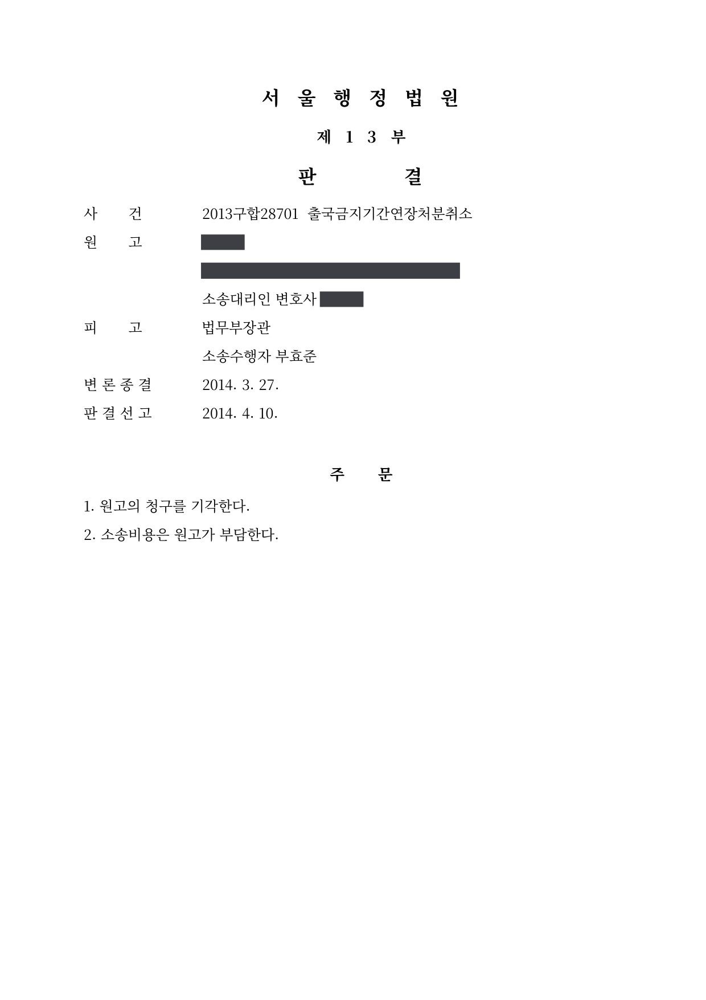

양도소득세 체납자 출국금지 기간연장처분 취소소송
서울행정법원 2013구합28701 · 담당변호사 부효준
판결문

사건의 요지
부동산 경매 후 발생한 양도소득세를 체납한 사람에 대한 출국금지 기간연장처분에 관하여, 체납처분 회피 우려의 인정 여부와 출국금지의 필요성이 다투어진 사건입니다.
사건의 주요 내용
원고 소유의 아파트 세 채가 2007년과 2008년 강제경매로 매각되어 그 대금이 채권자들에게 배당되었는데, 그 매각으로 발생한 양도소득세와 가산금 합계 약 1억 9,900만 원(양도소득세 약 1억 4,100만 원, 가산금 약 5,850만 원)이 체납되었습니다. 과세관청의 요청에 따라 처분청은 2011년 4월 국세 체납을 이유로 6개월의 출국금지처분을 하고, 이후 네 차례에 걸쳐 기간을 연장하였습니다.
2013년 10월 과세관청은 원고가 본인 소유 재산으로는 조세채권 확보가 불가능한 고액 체납자이고, 가족이 해외에 체류 중이며, 체납 뒤 가족 명의로 상당한 금액이 해외로 송금된 사실이 있어 재산을 은닉하고 해외로 도피할 우려가 있다는 이유로 다시 연장을 요청하였고, 처분청은 출국금지기간을 2013년 10월부터 2014년 4월까지로 연장하였습니다.
원고는 이 다섯 번째 연장처분의 취소를 구하는 소송을 제기하였고, 부효준 변호사는 처분청의 소송수행자로서 이 사건을 수행하였습니다.
쟁점
- 과세관청의 출국금지 요청이 국세징수법 시행령 제10조의5 제2항의 요건을 갖추지 못하였다는 사유만으로 처분청의 출국금지 연장처분이 위법해지는지
- 부동산이 강제경매되어 체납자에게 남은 돈이 없는 경우에도 양도소득세 체납에 정당한 사유가 없다고 볼 수 있는지
- 파산선고를 받은 체납자에게 재산의 해외 도피 우려를 인정할 수 있는지
원고의 주장
- 가족이 해외에 일시 체류하고 있을 뿐 국외로 이주한 것이 아니고, 최초 출국금지 요청 시점을 기준으로 2년간 미화 5만 달러 이상을 해외로 송금한 사실도 없는 등 국세징수법 시행령 제10조의5 제2항 각 호의 어느 요건에도 해당하지 않으므로, 이 처분은 출국금지 요청 요건을 갖추지 못한 위법한 처분이다.
- 부동산은 채권자에 의하여 강제경매된 것으로 원고에게 남은 잉여금이 전혀 없고, 예금과 자동차도 강제집행으로 채권자들이 회수하였으며, 원고는 경제활동을 하지 않고 2013년 3월 법원에서 파산선고까지 받았으므로 해외로 도피시킬 재산이 없다.
- 해외 송금은 가족이 자신의 보험금과 급여로 한 것이고 원고가 송금한 것이 아니며, 최초 출국금지 요청 당시 원고의 해외 출국은 2회에 불과하므로, 체납 사실만을 이유로 한 이 처분은 지나치게 가혹하여 재량권을 일탈·남용한 것이다.
부효준 변호사의 주장
- 과세관청의 출국금지 요청이 국세징수법 시행령 제10조의5 제2항의 요건을 갖추었는지와 별개로, 처분청은 그 요청에 구속되지 않고 출입국관리법상 출국금지 요건이 갖추어졌는지를 스스로 판단하여 처분하는 것이므로, 요청 요건의 미비만으로 처분이 위법해지는 것은 아니라고 반박하였습니다.
- 부동산의 강제경매도 '자산의 양도'로서 양도소득세 과세대상이고 매각대금으로 원고의 채무가 변제되었으므로 잉여금을 받지 못하였다는 사정은 체납의 정당한 사유가 되지 않으며, 원고는 소득이 있었을 것으로 보이는데도 체납액을 전혀 납부하지 않았다고 지적하였습니다.
- 원고가 체납 뒤 가족과 함께 여러 차례 해외에 출국하였고, 가족이 장기간 해외에 체류하고 있으며, 가족 명의 계좌에서 해외로 거액이 송금된 점 등에 비추어 은닉한 재산을 해외로 도피시킬 우려가 없다고 보기 어렵다고 주장하였습니다.
법원의 판단
법원은 첫째 주장에 대하여, 과세관청 등의 출국금지 요청이 있더라도 처분청은 이에 구속되지 않고 출국금지 요건이 갖추어졌는지를 따져 처분 여부를 결정할 수 있으므로, 요청이 요건을 갖추지 못하였다는 사유만으로 처분이 당연히 위법해지는 것은 아니고 재산의 해외 도피 가능성 등 처분 자체의 요건에 따라 적법 여부를 가려야 한다는 대법원 판례(2013. 12. 26. 선고 2012두18363 판결)를 들어, 원고가 시행령 각 호에 해당하는지는 판단할 필요가 없다고 하였습니다.
둘째 주장에 대해서는, 체납액이 기준 금액 5천만 원을 훨씬 초과하는데도 소득이 있었을 것으로 보이는 원고가 전혀 납부하지 않은 점, 부동산의 강제경매도 소득세법상 '자산의 양도'에 해당하고(대법원 2012. 9. 13. 선고 2010두13630 판결) 매각대금으로 원고의 채무가 변제되었으므로 잉여금을 받지 못하였더라도 체납에 정당한 사유가 없는 점을 먼저 들었습니다.
이어서 원고가 체납 뒤 가족과 함께 12회 해외에 출국하여 상당한 수준의 생활을 지속한 점, 가족 명의 계좌에서 해외로 송금된 돈을 가족의 보험금과 급여로 마련하였다는 주장은 시기와 금액에 비추어 믿기 어렵고 가족이 약 4년간 해외에 체류한 점을 들어, 은닉한 재산을 해외로 도피시킬 우려가 없다고 보기 어렵다고 판단하였습니다. 처분으로 원고가 입는 불이익이 공익에 비하여 지나치게 커서 가혹하다고 보기도 어렵다고 하여 원고의 청구를 받아들이지 않았습니다.
그러나 출입국관리법 제4조 제1항, 같은 법 시행령 제2조, 제2조의3 등의 규정을 종합해 보면, 위와 같이 과세관청 등의 출국금지 요청이 있는 경우에도 처분청은 이에 구속되지 않고 출국금지의 요건이 갖추어졌는지를 따져서 출국금지 처분 여부를 결정할 수 있다. 과세관청 등의 출국금지 요청이 요건을 구비하지 못하였다는 사유만으로 출국금지 처분이 당연히 위법하게 되는 것은 아니고, 아래 2)항에서 보는 바와 같이 재산의 해외 도피 가능성 등 출국금지 처분의 요건이 갖추어졌는지 여부에 따라 출국금지 처분의 적법 여부가 가려져야 한다(대법원 2013. 12. 26. 선고 2012두18363 판결 등 참조).
서울행정법원 2013구합28701 판결 이유 '2. 다. 1) 첫째 주장에 대한 판단'(행정청 이름은 역할어로 바꿈)
부동산의 강제경매는 부동산을 현금화하기 위한 행위로서 소득세법 제4조 제1항 제3호, 제88조 제1항의 양도소득세 과세대상인 ‘자산의 양도’에 해당하는 점(대법원 2012.9.13. 선고 2010두13630 판결 등 참조), 이 사건 부동산의 강제경매에 따른 매각대금으로 원고의 채권자에 대한 채무를 변제한 점 등을 고려하면, 원고가 이 사건 부동산의 강제경매에 따른 잉여금을 받지 못하였다고 하더라도 원고가 국세를 체납한 데에 정당한 사유가 있다고 볼 수 없다.
서울행정법원 2013구합28701 판결 이유 '2. 다. 2) 둘째 주장에 대한 판단 — 나)'
※ 판결 이유 가운데 이 사건의 판단 기준이 된 부분을 그대로 옮긴 것으로, 당사자 이름 등은 가렸습니다.
이 사건이 보여 주는 것
국세 체납자에 대한 출국금지는 과세관청의 요청과 처분청의 결정이라는 두 단계로 이루어집니다. 이 판결은 과세관청의 요청이 국세징수법 시행령상 요건(가족의 국외 이주, 일정 금액 이상의 해외 송금 등)을 갖추었는지보다, 처분청의 처분 자체가 출입국관리법상 요건, 특히 재산의 해외 도피 우려를 갖추었는지가 적법 여부를 좌우한다는 점을 보여 줍니다. 요청 요건의 흠만을 다투는 전략에는 한계가 있습니다.
또한 부동산이 강제경매되어 체납자에게 남은 돈이 없더라도 매각대금으로 채무가 변제된 이상 양도소득세 체납에 정당한 사유가 인정되지 않고, 파산선고를 받았다는 사정도 가족의 해외 체류와 송금 내역 같은 다른 정황이 있으면 해외 도피 우려를 부정하는 결정적인 사정이 되지 못한다는 점을 알 수 있습니다.
관련 법령출입국관리법 제4조 제1항 제4호, 제4조 제3항, 제4조의2 · 출입국관리법 시행령 제1조의3 제2항, 제2조, 제2조의3 · 국세징수법 제7조의4 · 국세징수법 시행령 제10조의5 · 소득세법 제4조 제1항 제3호, 제88조 제1항
관련 단어출국금지기간 연장처분양도소득세 체납강제경매자산의 양도국세징수법 시행령 제10조의5출국금지 요청 요건재산의 해외 도피 우려파산선고해외 송금재량권 일탈·남용처분 적법
비슷한 처분을 받으셨다면
행정처분은 처분이 있음을 안 날부터 90일 이내에 행정심판이나 취소소송으로 다투어야 하고, 기간이 지나면 돌이킬 수 없는 처분은 집행정지를 서둘러야 합니다. 처분서를 받은 날짜부터 확인해 드립니다.